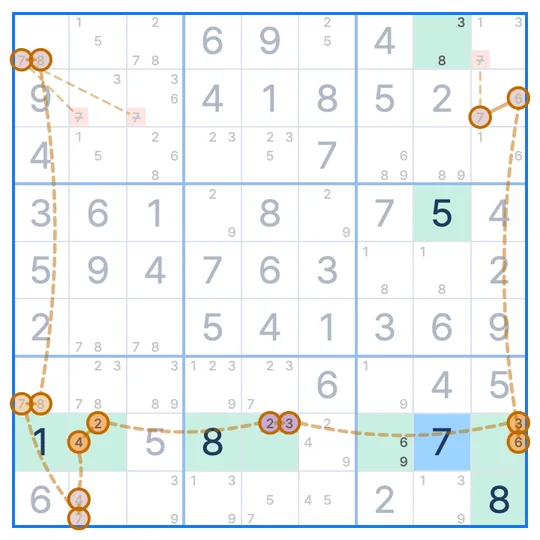

SUDOKU TECHNIQUE · Chains
XY-Chain
An XY-Chain is a chain of two-candidate cells, each passing one digit to the next, whose two ends share the same digit. That digit can be removed from any cell that sees both ends.
- Cells needed
- Several cells with two candidates
- How they link
- Neighbors share one digit
- What to remove
- Cells that see both ends
The XY-Chain pattern
Four cells with two candidates each. From R1C1 (3 and 5) through R1C6 (5 and 8) and R5C6 (8 and 2) to R5C9 (2 and 3), each neighbor shares one digit. Both ends hold a 3.
Why does this work?
Suppose the start, R1C1, is not 3. Then the chain decides the rest in turn.
So if R1C1 is not 3, R5C9 is. One of the two ends is always 3, and a cell that sees both ends (R1C9 and R5C1) cannot be 3. Remove the 3 from those cells.
How to find the XY-Chain
- Start from a two-candidate cell and pick one of its digits as the end digit.
- Step to the next two-candidate cell through the other digit. It has to share a row, column or box.
- Keep going until you reach a cell that ends with the end digit, then remove that digit from cells that see both ends.
The shortest XY-Chain, with three cells, is the XY-Wing.
Common questions
How long can the chain be?
There is no limit. Every cell needs exactly two candidates, and each neighbor has to see the next and share one digit.
How is it different from an X-Chain?
An X-Chain links cells through one digit. An XY-Chain switches digits inside two-candidate cells.
What if the two ends hold different digits?
Then this chain removes nothing. The ends need the same digit. With different ends, an AIC can sometimes reach another conclusion.
Related techniques
IN THE SUDOKU LEAGUE APP
Stuck? A hint shows you the XY-Chain
When you are stuck, a hint draws the chain one link at a time. In Technique Practice you learn the XY-Chain on a real puzzle. The first board walks you through the pattern and the reason, and on the next one you find it yourself.
